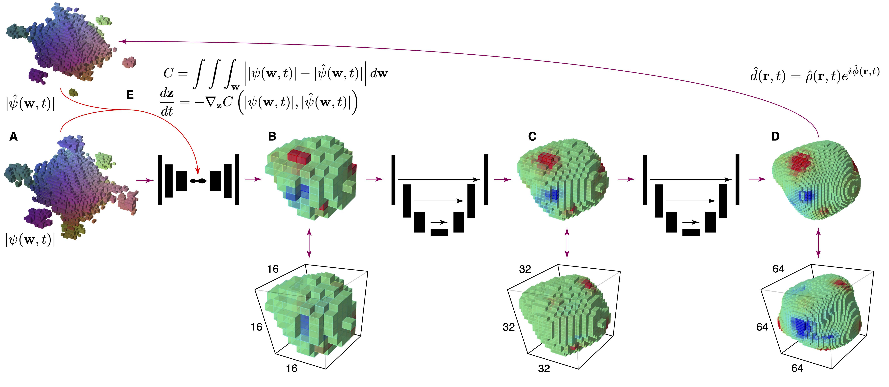
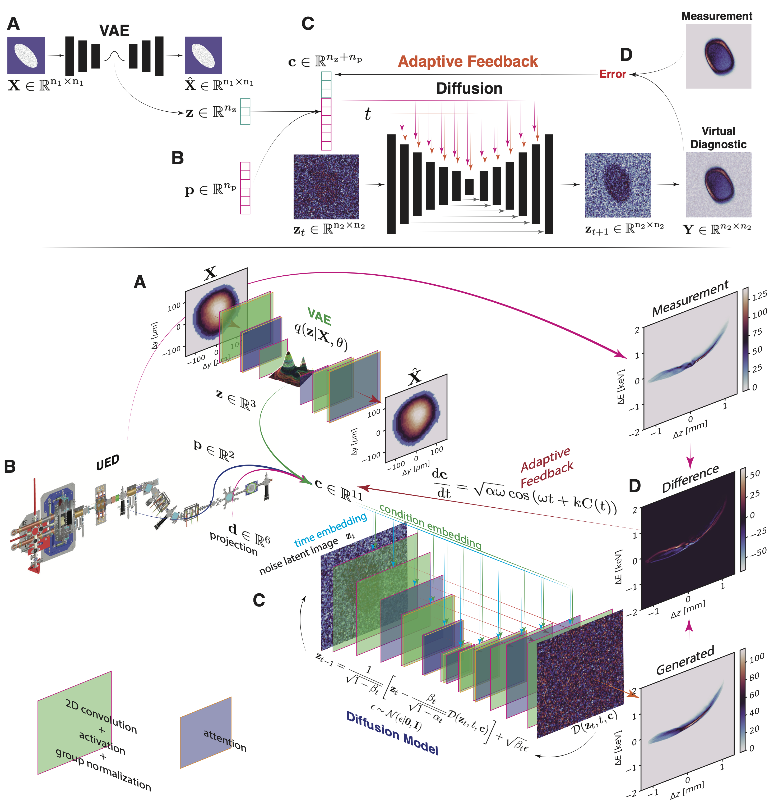
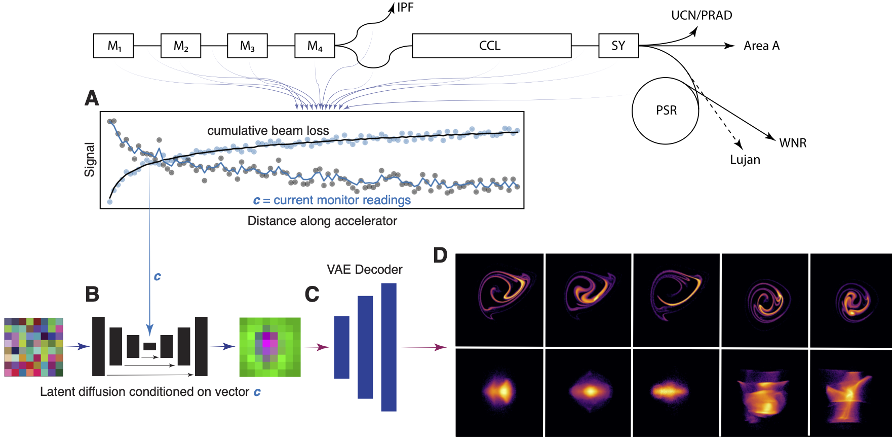
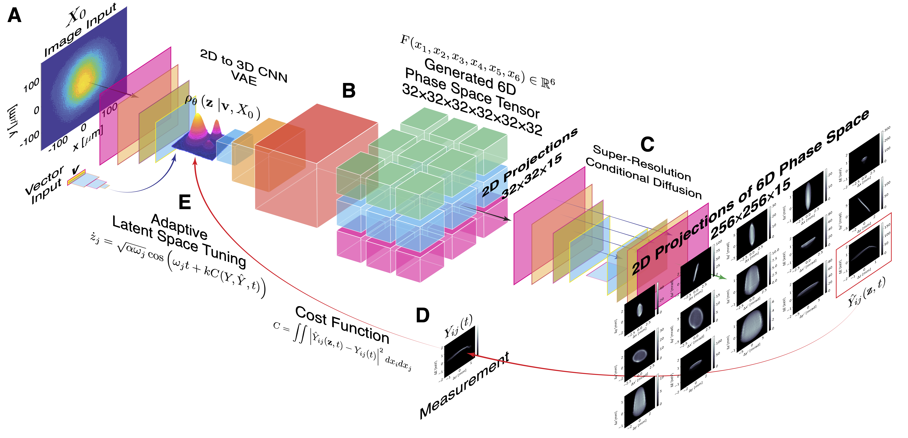
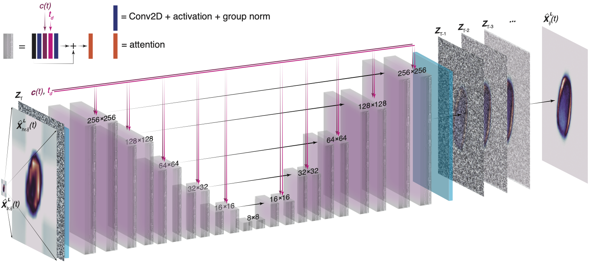
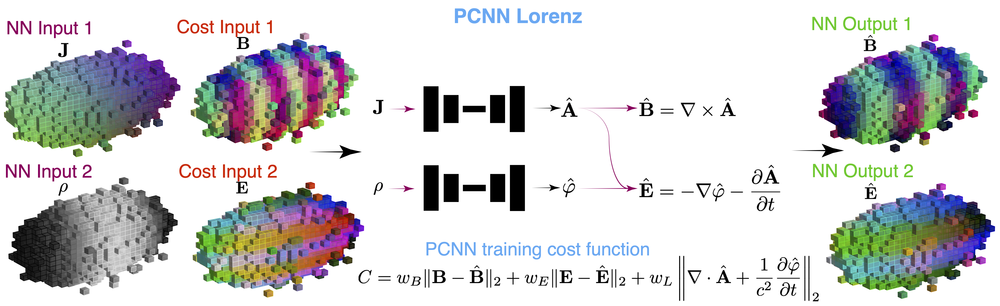

Some Recent Research Highlights
This is a summary of some recent research on the intersection of control theory and generative AI.
Adaptive 3D CNN for Tracking Time-Varying Electron Density via 3D Coherent X-ray Diffraction
The animation shows various 3D electron densities that are generated by flying around in the 8D latent space of our generative autoencoder, whose structure is shown below.
Adaptive Multi-Modal Diffusion for Tracking Time-Varying Beams
An overview of a multi-modal adaptive diffusion setup is shown at two different levels of detail (top and bottom). A: Image-based charged particle beam measurements are envoded into a low-dimensional latent vector representation $\mathbf{z}$ by a VAE. B: Scalar measurements such as accelerator magnet settings, are collected as a vector $\mathbf{p}$. C: The measurement vectors are concatenated together with a physics-informed vector $\mathbf{d}$ which controls which 2D projection of the beam's 6D phase space density is generated, all three vectors are concatenated as a single conditional guidance vector $\mathbf{c}=[\mathbf{z},\mathbf{p},\mathbf{d}]$. D: A generated 2D projection is compared to its measurement (only certain 2D measurements are available), and the condtional vector $\mathbf{c}$ is then adaptively tuned to minimize prediction error. This allows all other projections to be generated and tracked as the beam changes with time.
Adaptive Latent Diffusion for Extreme Inverse Problems
A high level overview of the conditional diffusion-based beam diagnostic for the LANSCE accelerator at Los Alamos National Laboratory. In this case an adaptive conditionally guided diffusion model is solving an extreme inverse problem of mapping 1D beam loss and beam current measurements to high resolution detailed views of 2D projections of a charged particle beam's 6D phase space density. By adaptively tuning the conditional vector we are able to track time varying beam distributions based only on limited measurements.
Adaptive Super-resolution diffusion for 6D phase space diagnostics
A high level overview of a conditionally guided adaptive diffusion process for tracking the time-varying 6D phase space density of a charged particle beam in the HiRES compact electron accelerator at Lawrence Berkeley National Laboratory. A VAE is first used to compress a combination of initial beam condition image-based measurements together with accelerator parameters into a low-dimensional latent embedding $\mathbf{z}\in\mathbb{R}^3$, from which the generative half of the VAE then creates a 6D tensor of size $32^6$ which represents the beam's 6D phase space density. Individual $32\times 32$ pixel 2D projections are then created in a physically consistent way by projecting from this single 6D tensor. The resolution of these images is then increased to $256\times 256$ so that fine beam phase space density perturbations can be seen by a super-resolution diffusion model. The entire process is made to be adaptive, to track time-varying beams based only on limited measurements, by adaptively tuning the latent space embedding using adaptive feedback control theory techniques.
A detailed view of the super resolution diffusion process.
Physics Constrained Neural Network (PCNN) for Electrodynamics
A 3D CNN-based neural operator a neural operator maps fields of current density or charge density of charged particle beams to their associated electric and magnetic fields, while respecting hard physics constraints of Maxwell’s equations. Maxwell's equations are built in as hard constraints by generative potentials and then creating electromagnetic fields from those potentials as shown in the figure below. For example, the divergencelss condition for the generated magnetic field $\mathbf{B}(x,y,z,t)$ is strictly enforced by mapping the current density field $\mathbf{J}(x,y,z,t)$ to the vector potential $\mathbf{A}(x,y,z,t)$ from which the magentic field is created via $\mathbf{B}=\nabla \times \mathbf{A}$, this guarantees that $\nabla \cdot B = \nabla \cdot (\nabla \times \mathbf{A}) = \mathbf{0}$.
A high level overview of the PCNN setup for electrodynamics.